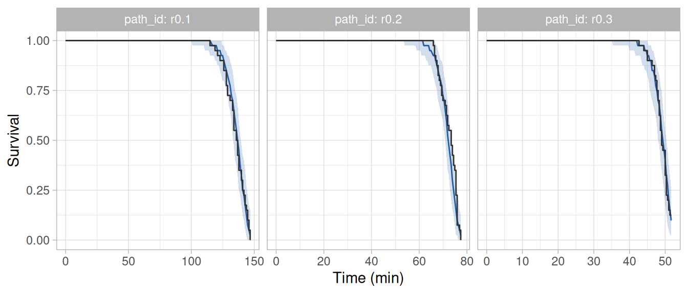
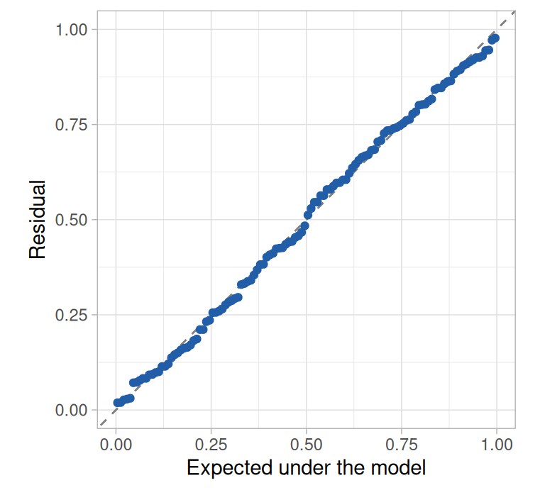
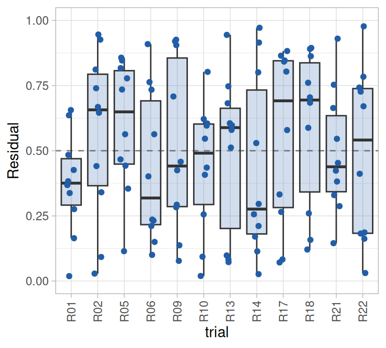
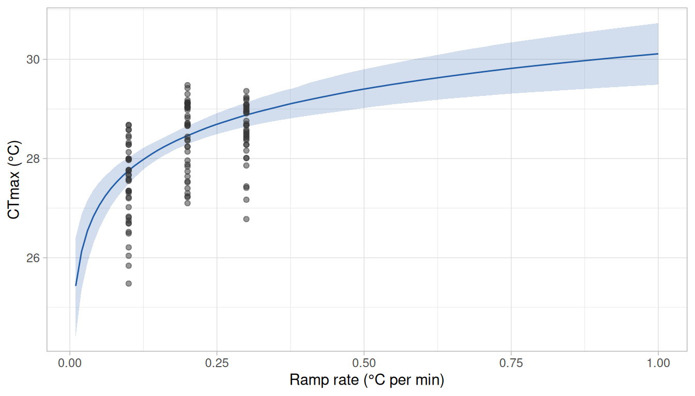
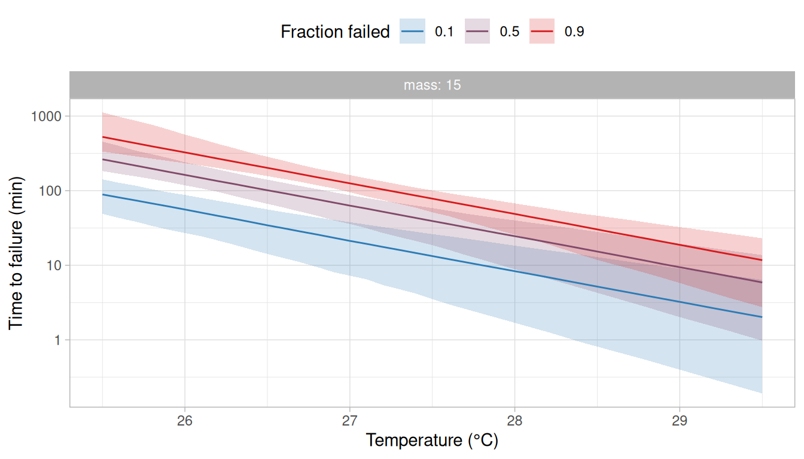
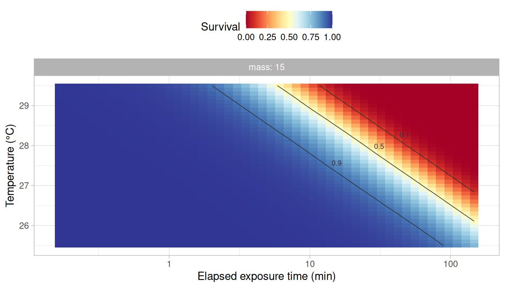
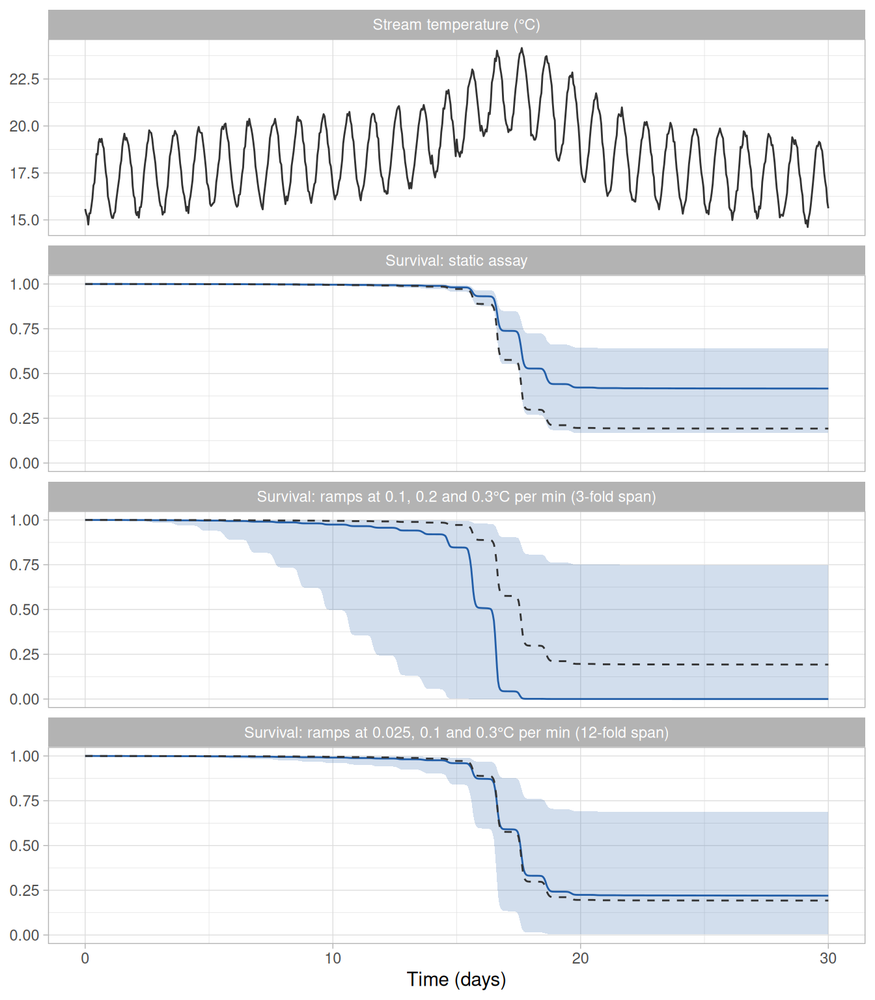

In a ramping assay, individuals are warmed at a constant rate until they fail, and the temperature at which each individual fails is recorded as its critical thermal maximum (CTmax, or dCTmax sensu Jørgensen et al. 2021). The mean CTmax of a group of individuals is the most widely reported measure of thermal tolerance. However, it depends on the temperature at which the ramp started and on the ramp rate, because individuals accrue hazard throughout the ramp (Kingsolver and Umbanhowar 2018; Jørgensen et al. 2021). rTFT therefore treats a ramping assay as it treats a static one: it fits a model of the failure rate to the times of failure, given the temperature each individual was exposed to through time, and derives the CTmax expected under any ramp from the fitted model.
In this vignette, we fit a model to a ramping assay run at three rates (0.1, 0.2 and 0.3°C per min) and derive from it: (i) the dynamic critical thermal maximum (dCTmax; i.e., the CTmax expected of a ramping trial) under the ramps of the assay and under ramps that were not run, (ii) the static critical thermal maximum (sCTmax), (iii) the thermal death time curves and (iv) the thermal tolerance landscape. We then show that what the model can estimate from a ramping assay depends on the ramp rates that were run, and mainly on how much they differ (i.e., on the ratio between the fastest and the slowest rate). For that, we fit the same model to an assay of the same size in which the slowest rate was 0.025°C per min, and compare what the two assays allow the model to estimate and predict. We also describe two steps that are specific to ramping assays, which are how the temperature of each ramp is given to the package and how closely the ramp is followed when the model is fitted. The model and the steps shared with a static assay are described in more detail in the vignette Getting started with rTFT.
The ramping assay
The mock dataset ramp_assay holds the times to loss of equilibrium of 320 juvenile salmonids warmed from 14°C at a constant rate until they failed or the water reached 29.5°C, in trials of ten fish. Four rates (0.025, 0.1, 0.2 and 0.3°C per min) were each run in four trials in normoxia (10 mg/L of dissolved oxygen) and four in hypoxia (5 mg/L). The fish were watched throughout the ramp, so the time of each failure is known (to the nearest 0.1 min). We start with the 120 fish warmed at the three faster rates in normoxia, and use the trials at the slow rate in the section The choice of ramp rates. The effect of dissolved oxygen is the subject of the vignette Temperature and a co-stressor.
Note
The data were simulated from the same model as the static assay of the vignette Getting started with rTFT (see
?ramp_assay), so we can compare what we estimate against the values used in the simulation.
ramp <- subset(ramp_assay, do == 10 & rate %in% c(0.1, 0.2, 0.3))
head(ramp)
#> # A tibble: 6 × 8
#> id trial path_id rate do mass event t_event
#> <int> <chr> <chr> <dbl> <dbl> <dbl> <int> <dbl>
#> 1 1 R01 r0.1 0.1 10 10.2 1 136.
#> 2 2 R01 r0.1 0.1 10 18.3 1 133.
#> 3 3 R01 r0.1 0.1 10 15.2 1 132
#> 4 4 R01 r0.1 0.1 10 26.3 1 130.
#> 5 5 R01 r0.1 0.1 10 23.8 1 125.
#> 6 6 R01 r0.1 0.1 10 18.6 1 132.Each row is a fish. The column event is 1 for a fish that failed and 0 for a survivor, and t_event is the time (min) at which the fish failed, or at which the ramp ended for a survivor. The column path_id links each fish to the ramp it was exposed to. The CTmax of a fish is the temperature that the ramp had reached when the fish failed, which follows from the starting temperature, the rate and the time of failure.
ramp$ctmax <- 14 + ramp$rate * ramp$t_event
observed <- ramp |>
dplyr::summarise(
n_fish = dplyr::n(),
n_failed = sum(event),
median_time = median(t_event),
median_ctmax = median(ctmax),
.by = rate
)
observed
#> # A tibble: 3 × 5
#> rate n_fish n_failed median_time median_ctmax
#> <dbl> <int> <int> <dbl> <dbl>
#> 1 0.1 40 40 136. 27.6
#> 2 0.2 40 40 73.4 28.7
#> 3 0.3 40 35 49.0 28.7All fish failed at the two slower rates, and 5 of the 40 fish warmed at 0.3°C per min reached 29.5°C without failing. The survivors are counted at 29.5°C in the table. This does not change the median, because fewer than half of the fish survived and all of them outlasted the fish that failed, so the median is the CTmax of fish that failed. The median CTmax increased with the ramp rate, from 27.6°C at 0.1°C per min to 28.7°C at 0.3°C per min, although the fish of the three groups were simulated with the same thermal tolerance. The fish in the slowest ramp had been exposed for more than twice as long when they failed (136 min against 49 min), and they failed at a lower temperature because they had more time to accrue hazard before each temperature was reached.
The temperature of each ramp
The function build_hazard_data() requires the temperature that each group of fish was exposed to through time, as a table of times and temperatures for each path_id. It interpolates the table linearly, so a ramp at a constant rate needs only its first and last points.
Nominal ramps
The function ramp_path() builds the table from the starting temperature, the rate and the duration of each ramp. Each ramp of the assay spanned 15.5°C (from 14 to 29.5°C), so its duration is 15.5°C divided by its rate.
Logged temperatures
When the temperature was logged during a trial, the logged record itself can be given as the table of temperatures (with one row per reading), and build_hazard_data() interpolates between the readings. A logged record should be preferred to the nominal ramp whenever the two differ, because the failure rate increases steeply with temperature and a small error in temperature therefore results in a large error in the failure rate.
The function assess_ramp_linearity() compares a logged record with a straight line. As an example, we simulate the logged record of a trial set to 0.3°C per min, in which the water warmed slightly slower than intended and the temperature was read every 30 s with a small error.
set.seed(1)
logged <- data.frame(path_id = "r0.3", time = seq(0, 51.5, by = 0.5))
logged$temp <- 14 + 0.29 * logged$time + rnorm(nrow(logged), mean = 0, sd = 0.05)
linearity <- assess_ramp_linearity(logged, nominal = c(r0.3 = 0.3))
as.data.frame(linearity)
#> path_id n T_start rate r_squared rmse max_abs_dev max_dev_hot
#> 1 r0.3 104 14.00804 0.2898664 0.9998968 0.0441944 0.1179019 0.07866906
#> rate_nominal rate_bias
#> 1 0.3 -0.0101336The logged record was very close to a straight line ( = 0.9999; largest deviation of 0.12°C), but the rate of that line was 0.290°C per min, and not the 0.3°C per min that was set. The difference appears small, but after 50 min the water was 0.5°C cooler than the nominal ramp indicates. With a thermal sensitivity of 1.7 per °C (the value used to simulate the data of this vignette), the failure rate at the nominal temperature is exp(1.7 × 0.5) = 2.3 times the failure rate at the temperature the fish were actually exposed to. In a case like this one, the nominal ramp should not be used. The model can be fitted with the logged record itself, or with a straight ramp built by ramp_path() from the starting temperature and the rate that were realised (the columns T_start and rate above). The straight ramp follows a linear logged record closely with far fewer rows, but it should only replace the logged record when the logged record deviates little from a straight line (the help page of assess_ramp_linearity() describes how little).
In the remainder of this vignette we use the nominal ramps, which are the temperatures the simulated fish were exposed to.
The table of intervals at risk
The model is fitted to a table with one row for every interval during which a fish was at risk of failing. For a static assay with periodic checks, the intervals are those between consecutive checks. When each failure was observed at a known time (a known-time failure; observation = "continuous"), there are no checks, and build_hazard_data() divides the exposure of each fish into intervals itself.
long <- build_hazard_data(
ramp, path,
observation = "continuous",
covariates = c("mass", "trial")
)
#> ℹ The intervals at risk were divided further, into 17243 rows from 125, so that
#> temperature changes by at most 0.1 degrees within each.
#> ℹ The hazard is taken as constant within an interval, which biases the fit when
#> temperature changes much within it. Failures at a known time are also given a
#> short closing interval, so their hazard is that of the moment of failure.
#> ℹ Set `grid_dT` to change the step, or to `Inf` to keep the intervals as given.The message printed by the function refers to how closely the ramp is followed. The model takes the hazard as constant within each interval, at the temperature of the midpoint of the interval. This approximation is accurate when the temperature changes little within an interval. In a ramp the temperature changes continuously and the failure rate increases steeply with it: with a thermal sensitivity of 1.7 per °C, the failure rate at the end of an interval over which the water warms by 0.5°C is exp(1.7 × 0.5) = 2.3 times the failure rate at its start. The hazard accrued over such an interval, taken at its midpoint, is understated by about (1.7 × 0.5)2 / 24 = 3% (the error grows with the square of the change in temperature within the interval), which biases the estimates slightly. The function therefore divides the exposure so that the temperature changes by at most 0.1°C within an interval (the argument grid_dT), where that error is below 0.1%, which gave 17,243 rows for the 120 fish.
first_fish <- long[long$id == long$id[1], c("id", "tau", "exposure", "Ta", "failed")]
# tau is the midpoint of each interval and exposure its length
first_fish$start <- first_fish$tau - first_fish$exposure / 2
first_fish$end <- first_fish$tau + first_fish$exposure / 2
tail(first_fish, 3)
#> # A tibble: 3 × 7
#> id tau exposure Ta failed start end
#> <int> <dbl> <dbl> <dbl> <int> <dbl> <dbl>
#> 1 1 134. 0.999 27.4 0 134. 135.
#> 2 1 135. 0.986 27.5 0 135. 136.
#> 3 1 136. 0.0136 27.6 1 136. 136.The table does not hold the start and the end of each interval, but its midpoint (tau) and its length (exposure), from which we computed them above. The last row of each fish that failed is a very short interval (about a hundredth of a minute here) that ends at its time of failure. A failure at a known time contributes to the model through the hazard at the moment it happened, and without that row the hazard would be taken at the midpoint of a longer interval, when the water was cooler. This is the larger of the two errors: in a simulation of eight assays of 3,000 fish warmed at 0.1–0.3°C per min and followed in intervals of 1 min without the closing row, the thermal sensitivity was underestimated by about 4% (1.63 against 1.70); with the closing row and the default grid, it was recovered (1.71 ± 0.01) whatever the length of the intervals.
We recommend leaving grid_dT at its default. A finer grid makes the table longer and the model slower to fit, but a coarser one biases the estimates (see the section The time grid in ?build_hazard_data). When the fish of a ramping trial are checked periodically instead of watched (observation = "interval"), the interval in which a fish failed cannot be divided, because where in it the fish failed is not known. In that case, the function gives a warning when the temperature changes by more than 0.5°C within the interval in which a fish was found to have failed. The intervals that a fish survived are divided as described above, so they need no warning.
As in a static assay, two columns hold the constants that anchor the model. The reference temperature Tr defaults to the median temperature at which failures were observed (28.3°C here) and the reference time tau_ref to the median time at which failures were observed (73.6 min).
Fitting
We fit the model of the vignette Getting started with rTFT: an exponential failure rate, , with a Weibull baseline whose shape allows the hazard to change with the time under exposure, and depending on body mass (centred at 15 g) and varying among trials.
formulas <- list(loga = ~ 1 + I(mass - 15) + (1 | trial))
fit <- fit_hazard(
long,
m_form = "exp",
baseline = "weibull",
dpar_formulas = formulas,
chains = 4, iter = 2000, warmup = 1000, cores = 4, seed = 20261006,
control = list(adapt_delta = 0.95), backend = "cmdstanr"
)The sampler settings, including adapt_delta, are those chosen in the vignette Getting started with rTFT and were not tuned for this model. The code above was run once and its results were saved with the package (see the note at the end of this vignette).
Convergence
posterior::summarise_draws(posterior::as_draws_array(fit),
"median", "sd", "rhat", "ess_bulk", "ess_tail")| variable | median | sd | rhat | ess_bulk | ess_tail |
|---|---|---|---|---|---|
| b_loga_Intercept | 2.006 | 0.249 | 1.002 | 1918 | 1970 |
| b_loga_ImassM15 | 0.038 | 0.015 | 1.000 | 4507 | 2842 |
| b_logb_Intercept | 0.512 | 0.078 | 1.000 | 3033 | 2671 |
| b_logshape_Intercept | 0.562 | 0.192 | 1.001 | 1942 | 1753 |
| sd_trial__loga_Intercept | 0.299 | 0.185 | 1.002 | 994 | 1558 |
All values of were below 1.01, all effective sample sizes were above 400 and there were 0 divergent transitions in 4,000 draws.
Fit of the model to the data
We check the model against the data with the two functions described in the vignette Getting started with rTFT. The first compares the proportion of fish observed to survive through time in each ramp with the same proportion in datasets simulated from the fitted model.
set.seed(20261006)
chk <- check_survival(fit)
plot_check(chk, time_unit = "min")
The second gives one residual for each fish (i.e., the fraction of fish that the model predicts to have failed by the time that fish did), which is uniformly distributed between 0 and 1 when the model describes the data.
set.seed(20261006)
res <- hazard_residuals(fit)
plot_residuals(res)
plot_residuals(res, against = "trial") +
theme(axis.text.x = element_text(angle = 90, vjust = 0.5))

In each of the three ramps, the observed proportion was within the simulated band (Figure 1). Both proportions remained at 1 for most of the exposure, because fish rarely fail while the water is still well below the temperatures at which failures were observed, and decreased steeply towards the end of the ramp. The residuals followed the uniform distribution closely and showed no trial whose fish consistently failed earlier or later than predicted (Figure 2). As in a static assay, the residuals should not be examined against the time of failure. In a ramping assay the same applies to the temperature at failure (i.e., the CTmax of each fish), which is the time of failure expressed on another scale (see ?hazard_residuals).
Thermal tolerance derived from the fit
tol <- derive_tdt_ttl(fit, newdata = data.frame(mass = 15), t_ref = 60,
Ta = seq(25.5, 29.5, by = 0.1))The argument Ta sets the temperatures at which the thermal death time curves are computed. By default, derive_tdt_ttl() computes them across the temperatures in the table of intervals at risk, which in a ramping assay start at the temperature at which the ramps began (14°C here). The fish of this assay failed at 25.5–29.5°C, so we restricted the curves to those temperatures.
Parameters
| quantity | median | lower | upper |
|---|---|---|---|
| a | 7.51 | 4.50 | 12.61 |
| b | 1.66 | 1.43 | 1.93 |
| shape | 1.74 | 1.15 | 2.48 |
| z | 2.42 | 1.56 | 3.34 |
The amplitude is the cumulative hazard reached over the reference time (73.6 min) at the reference temperature (28.3°C) (Table 1). The thermal sensitivity was 1.66 per °C (95% credible interval: 1.43–1.93), which corresponds to a failure rate that increases 5.3-fold per degree (i.e., = 5.3, because multiplies the temperature inside the exponential of ).
The shape of the baseline was estimated with less precision than (95% credible interval: 1.15–2.48; the posterior probability that it is greater than 1 was 0.99). For comparison, the static assay of the vignette Getting started with rTFT, which was simulated from the same model, gave a 95% credible interval of 1.12–1.65 for . The difference follows from how each kind of assay informs the baseline. In a static trial the temperature is constant, so any change in the hazard during the trial can only be due to the time under exposure. Within a ramp, the temperature and the time under exposure increase together, so a single ramp separates their effects on the hazard very poorly (see ?h0_catalogue). The two effects are separated mostly by the comparison among ramp rates, because the fish in a slower ramp have been exposed for longer when the water reaches a given temperature. The rates of this assay differ only threefold, which limits that comparison (see the section The choice of ramp rates). The uncertainty in carries over to (i.e., the increase in temperature that shortens the time to failure tenfold, ).
Dynamic critical thermal maximum
The function derive_dctmax() gives the CTmax expected under a ramp (dCTmax; Jørgensen et al. 2021), which is the temperature at which a given fraction of the individuals have failed. By default that fraction is half (the argument p), which corresponds to the median CTmax of a trial. We first derive it for the three ramps of the assay and compare it with the median CTmax that was observed.
dct <- derive_dctmax(fit, rate = rates, T_start = 14,
newdata = data.frame(mass = 15))
# dct_static holds the same quantity from the model of the vignette
# Getting started with rTFT (see its section on the dynamic critical thermal maximum)
estimate <- function(x) sprintf("%.1f (%.1f–%.1f)", x$median, x$lower, x$upper)
knitr::kable(data.frame(
`Ramp rate (°C per min)` = dct$rate,
`Observed` = sprintf("%.1f", observed$median_ctmax),
`Derived, ramping assay` = estimate(dct),
`Derived, static assay` = estimate(dct_static),
check.names = FALSE
), align = "rrrr")| Ramp rate (°C per min) | Observed | Derived, ramping assay | Derived, static assay |
|---|---|---|---|
| 0.1 | 27.6 | 27.8 (27.5–28.0) | 28.1 (27.8–28.5) |
| 0.2 | 28.7 | 28.5 (28.3–28.7) | 28.7 (28.3–29.1) |
| 0.3 | 28.7 | 28.9 (28.6–29.1) | 29.0 (28.6–29.5) |
The dCTmax derived from the ramping assay was within 0.2°C of the median CTmax observed in each ramp (Table 2). The two are not expected to be equal, because the dCTmax refers to a fish of 15 g in a typical trial and the observed median to 40 fish of different masses in four trials.
The last column of the table holds the dCTmax derived in the vignette Getting started with rTFT from the model fitted to the static assay, in which no fish was exposed to a ramp or to a temperature above 27°C. Those values were 0.1–0.3°C higher than the values derived from the ramping assay, and the credible intervals of the two overlapped at the three rates.
Because the model describes the failure rate at each temperature and not the outcome of a particular ramp, it can also be asked what CTmax a ramp that was not run would give (Figure 3).
dct_rates <- derive_dctmax(fit, rate = seq(0.01, 1, by = 0.01),
T_start = 14, newdata = data.frame(mass = 15))
ggplot(dct_rates, aes(x = rate)) +
geom_ribbon(aes(ymin = lower, ymax = upper), fill = "#225EA8", alpha = 0.2) +
geom_line(aes(y = median), colour = "#225EA8") +
geom_point(data = subset(ramp, event == 1), aes(y = ctmax),
colour = "grey20", alpha = 0.5) +
labs(x = "Ramp rate (°C per min)", y = "CTmax (°C)") +
theme_light()
The curve rises steeply among the slow ramps and flattens among the fast ones, but it does not approach a maximum (Figure 3). The dCTmax rises by a similar amount each time the rate is doubled (0.7°C from 0.05 to 0.1°C per min, 0.7°C from 0.25 to 0.5°C per min and 0.7°C from 0.5 to 1°C per min), so under the fitted model it keeps increasing with the rate, more and more slowly. A curve of this kind shows how much two values of CTmax may differ because of the ramp rate alone (i.e., with no change in the thermal tolerance of the individuals). Under the fitted model, the same fish have a CTmax 1.1°C higher at 0.3°C per min than at 0.1°C per min.
In this example, the dCTmax is predicted to increase from 25.4°C (95% credible interval: 24.4–26.4°C) at 0.01°C per min to 30.1°C (29.5–30.7°C) at 1°C per min. The credible interval was narrowest near the rates of the assay (0.4°C wide at 0.18°C per min) and widened towards the slower and the faster ramps, which the assay did not include (2.0°C wide at 0.01°C per min). At the fastest ramps the dCTmax was above 29.5°C, the warmest temperature of the assay, and derive_dctmax() prints a message when that is the case.
The curve also provides an expectation against which the CTmax observed at other rates can be compared. In a slow ramp, a CTmax lower than expected is consistent with stress accumulated over the long exposure, and a CTmax higher than expected with acclimation during it (Kingsolver and Umbanhowar 2018). However, a departure may also result from a failure rate function or a baseline of the wrong form, so it should not be taken as a measure of stress or of acclimation without evidence that excludes those alternatives.
Static critical thermal maximum and thermal death time curves
| mass | p | t_ref | median | lower | upper |
|---|---|---|---|---|---|
| 15 | 0.1 | 60 | 25.93 | 25.34 | 26.42 |
| 15 | 0.5 | 60 | 27.05 | 26.59 | 27.46 |
| 15 | 0.9 | 60 | 27.78 | 27.39 | 28.15 |
Half of the fish of 15 g are expected to fail within 60 min at a constant temperature of 27.1°C (95% credible interval: 26.6–27.5°C). This sCTmax is lower than the dCTmax under the three ramps of the assay (27.8–28.9°C), in which the fish spend only a few minutes near each temperature (see the vignette Getting started with rTFT).
plot_tdt(tol, time_unit = "min")
A thermal death time curve gives the time to failure at a constant temperature, whereas the fish of this assay failed in ramps, after 43–147 min of exposure. The curves are best estimated at the temperatures at which a fish held at a constant temperature would take about that long to fail (26.2–27.4°C for half of the fish), and the credible bands are narrowest there (Figure 4). At 29.5°C, half of the fish held at a constant temperature would fail within 6 min, which is much sooner than any fish failed in the ramps. No ramp provides data on failures after such a short exposure, so the model obtains those times from what it estimated about the baseline (i.e., from ), and the bands are wide there because is uncertain.
Thermal tolerance landscape
The thermal tolerance landscape (Rezende et al. 2014) is derived in the same way as from a static assay (Figure 5). Although no fish of this assay was held at a constant temperature, the fitted model describes the failure rate at each temperature and the baseline, and the probability of surviving any combination of constant temperature and exposure time follows from the two.
plot_ttl(tol, time_unit = "min")
The landscape covers the temperatures at which the fish failed in the ramps and exposures up to the longest after which a fish failed (147 min). As for the thermal death time curves, the part of the landscape for high temperatures and exposures of a few minutes depends on the baseline extrapolated to exposures shorter than those after which the fish failed, and so would any extension of the landscape to longer exposures. The figure shows the posterior median, and the table ttl_surface returned by derive_tdt_ttl() also holds the 95% credible interval of the probability of survival at each temperature and exposure time.
Comparison with the values used in the simulation
The estimates can be set against the values used in the simulation, which are stored with the dataset. As in the vignette Getting started with rTFT, the simulated (defined at 26°C with a Weibull scale of 60 min) is first converted to the reference temperature and reference time of the fitted model. The simulated dCTmax has no closed form under a Weibull baseline, so it is obtained by finding the time at which the hazard accrued along each ramp reaches , with = 0.5.
truth <- attr(ramp_assay, "truth")
Tr <- unique(long$Tr)
tau_ref <- unique(long$tau_ref)
# The temperature at which half of the fish have failed under a ramp from 14°C.
simulated_dctmax <- function(rate, T_start = 14, p = 0.5) {
hazard <- function(t) {
exp(truth$log_a + truth$b * (T_start + rate * t - truth$T_ref)) *
(truth$shape / truth$scale) * (t / truth$scale)^(truth$shape - 1)
}
accrued <- function(t) integrate(hazard, lower = 0, upper = t)$value + log(1 - p)
T_start + rate * uniroot(accrued, interval = c(1, 20 / rate), tol = 1e-8)$root
}
simulated <- c(
# a at the reference temperature and time of the fitted model
exp(truth$log_a + truth$b * (Tr - truth$T_ref)) * (tau_ref / truth$scale)^truth$shape,
truth$b, truth$shape, truth$shape * log(10) / truth$b,
# sCTmax for p = 0.5 and 60 min: the temperature at which M(T) H0(60) = log(2)
truth$T_ref + (log(log(2)) - truth$log_a - truth$shape * log(60 / truth$scale)) / truth$b,
vapply(rates, simulated_dctmax, numeric(1))
)
keep <- c("median", "lower", "upper")
comparison <- data.frame(
quantity = c("a", "b", "k", "z", "sCTmax (60 min)",
paste0("dCTmax (", rates, "°C per min)")),
simulated = simulated,
rbind(tol$params[keep], tol$sctmax[tol$sctmax$p == 0.5, keep], dct[keep])
)
knitr::kable(comparison, digits = 2, row.names = FALSE)| quantity | simulated | median | lower | upper |
|---|---|---|---|---|
| a | 7.81 | 7.51 | 4.50 | 12.61 |
| b | 1.70 | 1.66 | 1.43 | 1.93 |
| k | 1.50 | 1.74 | 1.15 | 2.48 |
| z | 2.03 | 2.42 | 1.56 | 3.34 |
| sCTmax (60 min) | 27.03 | 27.05 | 26.59 | 27.46 |
| dCTmax (0.1°C per min) | 27.93 | 27.76 | 27.49 | 28.02 |
| dCTmax (0.2°C per min) | 28.53 | 28.46 | 28.29 | 28.66 |
| dCTmax (0.3°C per min) | 28.88 | 28.88 | 28.64 | 29.13 |
The 95% credible intervals include the data generating values of all 8 quantities (Table 3). One assay says little about how often the intervals include those values. In 40 assays of 120 fish simulated from the same model and warmed at rates between 0.1 and 0.3°C per min (not shown), the 95% credible intervals of , , sCTmax and dCTmax included the data generating values in 92.5–100% of the assays, and the biases of the posterior medians were within their Monte Carlo errors.
The choice of ramp rates
The span of the rates
The shape was the parameter that the assay informed least due to the rates that were used. The effect of the time under exposure on the hazard can only be estimated by comparing fish that reached the same temperature after different exposure times. In ramps that start at the same temperature, the fish warmed at 0.1°C per min have been exposed three times as long as the fish warmed at 0.3°C per min when the water reaches any given temperature. The two groups have the same failure rate at that temperature, so their hazards differ only through the baseline. The Weibull baseline is proportional to the time under exposure raised to (i.e., ), so an exposure three times as long gives a hazard times as high (i.e., 1.7 times for = 1.5). The ratio between the fastest and the slowest rate (hereafter, the span of the rates) therefore sets the size of the difference from which is estimated. With rates of 0.025 and 0.3°C per min, the span is 12 and the same factor is (3.5 for = 1.5).
What matters for is therefore how far apart the rates are, and not how slow the slowest one is: rates of 0.1 and 1.2°C per min give the same 12-fold difference in exposure time at any temperature as rates of 0.025 and 0.3°C per min. The comparison that informs the most is that between the slowest and the fastest rates, so a rate between them is expected to add much less than a wider span does. With a single rate there is no such comparison, and the effects of temperature and of the time under exposure cannot be estimated reliably (see ?h0_catalogue). Likewise, Jørgensen et al. (2021) indicates that ramping trials of at least two ramp rates are required to estimate the parameters of their model, and recommend a broad span of rates.
Two assays of the same size
The trials at 0.025°C per min allow us to compare two assays that differ only in the span of their rates. Replacing the four trials at 0.2°C per min with the four trials at 0.025°C per min gives an assay of the same size (120 fish in 12 trials, eight of them shared with the first assay) whose rates span 12-fold instead of 3-fold. The same model is fitted to it with the same code.
rates_wide <- c(0.025, 0.1, 0.3)
ramp_wide <- subset(ramp_assay, do == 10 & rate %in% rates_wide)
path_wide <- ramp_path(c("r0.025", "r0.1", "r0.3"), T_start = 14, rate = rates_wide,
t_max = 15.5 / rates_wide)
long_wide <- build_hazard_data(ramp_wide, path_wide, observation = "continuous",
covariates = c("mass", "trial"))
fit_wide <- fit_hazard(
long_wide,
m_form = "exp",
baseline = "weibull",
dpar_formulas = formulas,
chains = 4, iter = 2000, warmup = 1000, cores = 4, seed = 20261006,
control = list(adapt_delta = 0.95), backend = "cmdstanr"
)This model also converged (all below 1.01, all effective sample sizes above 400 and 0 divergent transitions), and the two checks of fit gave the same result as for the first model: the proportion of fish observed to survive was within the simulated band throughout the three ramps, and the residuals followed the uniform distribution with no trial standing out (not shown). From each of the two models we derive the quantities above and predict the survival of a 15 g fish along the 30 days of stream_record, as in the vignette Getting started with rTFT.
pred <- predict_survival(fit, stream_record, newdata = data.frame(mass = 15))
pred_wide <- predict_survival(fit_wide, stream_record, newdata = data.frame(mass = 15))The data were simulated, so the predictions can be compared with the survival that the model used to simulate them gives along the same record, which is obtained from the hazard accrued between consecutive readings.
# Survival under the model used to simulate the data, with the hazard accrued
# between consecutive readings taken at the temperature midway between them.
truth <- attr(ramp_assay, "truth")
n <- nrow(stream_record)
midpoint <- (stream_record$temp[-1] + stream_record$temp[-n]) / 2
accrued <- exp(truth$log_a + truth$b * (midpoint - truth$T_ref)) *
diff((stream_record$time / truth$scale)^truth$shape)
simulated_survival <- data.frame(time = stream_record$time,
survival = c(1, exp(-cumsum(accrued))))| Quantity | Simulated | 0.1, 0.2, 0.3 (3-fold) | 0.025, 0.1, 0.3 (12-fold) |
|---|---|---|---|
| b (per °C) | 1.70 | 1.66 (1.43–1.93) | 1.54 (1.33–1.81) |
| k | 1.50 | 1.74 (1.15–2.48) | 1.32 (1.02–1.64) |
| z (°C) | 2.03 | 2.42 (1.56–3.34) | 1.97 (1.56–2.34) |
| sCTmax for 60 min (°C) | 27.03 | 27.05 (26.59–27.46) | 26.68 (26.24–27.08) |
| dCTmax at 0.1°C per min (°C) | 27.93 | 27.76 (27.49–28.02) | 27.78 (27.59–27.97) |
| dCTmax at 0.3°C per min (°C) | 28.88 | 28.88 (28.64–29.13) | 28.70 (28.45–28.95) |
| Mortality along the stream record (%) | 81 | 100 (25–100) | 78 (31–100) |
| Mortality along the stream record, posterior mean (%) | 81 | 91 | 74 |
The 95% credible interval of was 2.2 times narrower with the 12-fold span than with the 3-fold span (Table 4), and so was that of , which depends on . The quantities that the ramps inform directly changed little: the intervals of , of the sCTmax for 60 min and of the dCTmax had similar widths in the two assays.
The difference between the assays is largest for the prediction along the stream record, which extrapolates the model to exposures of days and therefore depends strongly on (Figure 6). The model used to simulate the data gives a mortality of 81% along the record for a fish of 15 g in a typical trial. With the 3-fold span, the model predicted 100% (95% credible interval: 25–100%), and its credible band has survival decreasing from the first week of the record, when the stream was below 21°C and almost no fish fail under the model used to simulate the data. With the 12-fold span, it predicted 78% (31–100%), and survival decreased during the heat wave of the third week, as it does under that model. These values are posterior medians. The posterior means, which are the fractions of fish expected to fail with the uncertainty in the parameters taken into account, were 91% and 74% (Table 4). The mean and the median differ most where the posterior is wide and skewed, as with the 3-fold span (see the vignette Comparing and averaging models). For comparison, the model fitted to the static assay in the vignette Getting started with rTFT predicted 60% (35–84%).
# pred_static is the prediction of the vignette Getting started with rTFT (there, pred)
panels <- c("Stream temperature (°C)",
"Survival: static assay",
"Survival: ramps at 0.1, 0.2 and 0.3°C per min (3-fold span)",
"Survival: ramps at 0.025, 0.1 and 0.3°C per min (12-fold span)")
temperature <- data.frame(panel = panels[1], time = stream_record$time,
temp = stream_record$temp)
predicted <- rbind(
data.frame(panel = panels[2], pred_static$survival),
data.frame(panel = panels[3], pred$survival),
data.frame(panel = panels[4], pred_wide$survival)
)
# Survival under the model used to simulate the data is drawn in each of the three
# panels of survival.
simulated_survival <- merge(data.frame(panel = panels[2:4]), simulated_survival)
# The three panels of survival share an axis from 0 to 1.
axis_ends <- data.frame(panel = rep(panels[2:4], each = 2), time = 0, survival = c(0, 1))
# The panels share one order in the four tables.
temperature$panel <- factor(temperature$panel, levels = panels)
predicted$panel <- factor(predicted$panel, levels = panels)
simulated_survival$panel <- factor(simulated_survival$panel, levels = panels)
axis_ends$panel <- factor(axis_ends$panel, levels = panels)
ggplot(mapping = aes(x = time / 1440)) +
geom_blank(data = axis_ends, aes(y = survival)) +
geom_line(data = temperature, aes(y = temp), colour = "grey20") +
geom_ribbon(data = predicted, aes(ymin = lower, ymax = upper),
fill = "#225EA8", alpha = 0.2) +
geom_line(data = predicted, aes(y = median), colour = "#225EA8") +
geom_line(data = simulated_survival, aes(y = survival), linetype = "dashed",
colour = "grey20") +
facet_wrap(vars(panel), ncol = 1, scales = "free_y") +
labs(x = "Time (days)", y = NULL) +
theme_light()
This comparison rests on one pair of assays that share eight of their twelve trials, so the difference between them comes from the four trials that were replaced, and part of it may be due to chance. The direction of the difference is nevertheless the one expected from the argument above: a wider span informs better, and predictions for long exposures depend on .
A wide span has a cost when it is obtained with a slow ramp. At 0.025°C per min from 14°C, half of the fish fail after 8.5 h (against 0.8 h at 0.3°C per min) under the model used to simulate the data, and an exposure of several hours to rising temperatures may allow individuals to acclimate during the trial.
Temperatures and exposure times informed by a ramping assay
A wide span improves the predictions for long exposures, but it does not make them precise. Even with the 12-fold span, the 95% credible interval of the mortality along the stream record was 31–100% (Table 4).
The reason is that a ramping assay exposes every individual to a wide range of temperatures but informs the model over a much narrower one. The fish warmed at the three faster rates started at 14°C, failed at 25.5–29.5°C and had been exposed for 43–147 min when they failed. The fish warmed at 0.025°C per min failed at 22.6–28.0°C after 5.8–9.4 h. For cooler temperatures, either assay shows only that the fish did not fail during the time that they spent at them. The stream record never exceeded 24.1°C and lasted 30 days, so a prediction along it extrapolates the failure rate function to temperatures below those at which most fish failed and the baseline to exposures far longer than the ramps. The static assay, in contrast, held fish at 23°C for five days, and therefore included both the temperatures of the heat wave and exposures of days.
predict_survival() reports both kinds of extrapolation in the table coverage, and prints a message when either occurs.
coverage <- rbind(pred$coverage, pred_wide$coverage)
knitr::kable(data.frame(
`Ramp rates (°C per min)` = c("0.1, 0.2, 0.3", "0.025, 0.1, 0.3"),
coverage[c("Ta_failed_min", "Ta_failed_max", "below", "risk_below",
"tau_max", "beyond", "risk_beyond")],
check.names = FALSE
), digits = 2)| Ramp rates (°C per min) | Ta_failed_min | Ta_failed_max | below | risk_below | tau_max | beyond | risk_beyond |
|---|---|---|---|---|---|---|---|
| 0.1, 0.2, 0.3 | 25.48 | 29.48 | 1.00 | 1.00 | 146.8 | 1.00 | 1 |
| 0.025, 0.1, 0.3 | 22.65 | 29.36 | 0.96 | 0.18 | 561.2 | 0.99 | 1 |
The record lay entirely below the temperatures at which fish failed with the 3-fold span, and 96% of it (with 18% of the predicted risk) lay below them with the 12-fold span, in which the slowest ramp had fish failing at lower temperatures (Table 5). In both assays nearly all of the record, and of the risk predicted along it, came after the longest exposure of the assay (147 and 561 min, respectively).
The two kinds of extrapolation are smaller for a warm period than for the whole record. Predictions are more often needed for such a period (e.g., a heat wave), and a part of the record is given to predict_survival() in the same way, with its times counted from its first reading so that the exposure starts with the period.
heat_wave <- subset(stream_record, day %in% 16:20)
heat_wave$time <- heat_wave$time - heat_wave$time[1]
predict_survival(fit, heat_wave, newdata = data.frame(mass = 15))$mortality| Assay | 30 days | Heat wave, 5 days | Warmest day, 24 h |
|---|---|---|---|
| Static | 60 (35–84) [59] | 34 (23–46) [34] | 9 (6–14) [9] |
| Ramps at 0.1, 0.2, 0.3 (3-fold) | 100 (25–100) [91] | 88 (16–100) [78] | 26 (5–81) [31] |
| Ramps at 0.025, 0.1, 0.3 (12-fold) | 78 (31–100) [74] | 53 (24–86) [54] | 18 (8–34) [19] |
| Model used to simulate the data | 81 | 45 | 12 |
The three assays agreed better, and were closer to the value given by the model used to simulate the data, the shorter the period (Table 6). Their predictions were 60–100% for the 30 days (81% under the model used to simulate the data), 34–88% for the heat wave (45%) and 9–26% for the warmest day (12%). The span of the rates mattered for the shorter periods too. For the warmest day, the 95% credible interval was 8–34% with the 12-fold span and 5–81% with the 3-fold span, for which even one day is about ten times longer than the longest exposure of the assay.
A prediction for a part of the record counts the exposure from the start of that part, and so assumes that the days before it left no effect on the fish. Like the predictions for the whole record, it also assumes that there is no recovery during the cooler hours of each night. The model used to simulate the data makes the same assumption, so the agreement of a prediction with the simulated value says nothing about whether the assumption holds (see the vignette Getting started with rTFT).
Recommendations
When a ramping assay is intended to support more than the comparison of CTmax at the rates that were run, we recommend: (i) choosing the slowest and the fastest ramp rates as far apart as is practical, because the span of the rates determines how well the effect of the time under exposure is estimated; and (ii) adding static trials at the temperatures and durations that the intended predictions refer to, because a ramping assay alone leaves predictions for long exposures at lower temperatures imprecise even with a wide span. Static and ramping trials can be analysed in a single model, with the individuals of both in one table (see observation = "mixed" in ?build_hazard_data).
Precomputed results
The models in this vignette were fitted on 2026-10-08 with the development version of
rTFTthat became 0.1.0 (0.0.0.9000), by the scriptvignettes/_precompute.Rin the package’s repository. The vignette displays the saved summaries, and all other code runs when the vignette is built. The values for the static assay are those saved for the vignette Getting started with rTFT (fitted on 2026-10-08 with version 0.0.0.9000).
References
Jørgensen, L. B., Malte, H., Ørsted, M., Klahn, N. A. and Overgaard, J. (2021). A unifying model to estimate thermal tolerance limits in ectotherms across static, dynamic and fluctuating exposures to thermal stress. Scientific Reports 11, 12840. https://doi.org/10.1038/s41598-021-92004-6
Kingsolver, J. G. and Umbanhowar, J. (2018). The analysis and interpretation of critical temperatures. Journal of Experimental Biology 221, jeb167858. https://doi.org/10.1242/jeb.167858
Rezende, E. L., Castañeda, L. E. and Santos, M. (2014). Tolerance landscapes in thermal ecology. Functional Ecology 28, 799–809. https://doi.org/10.1111/1365-2435.12268